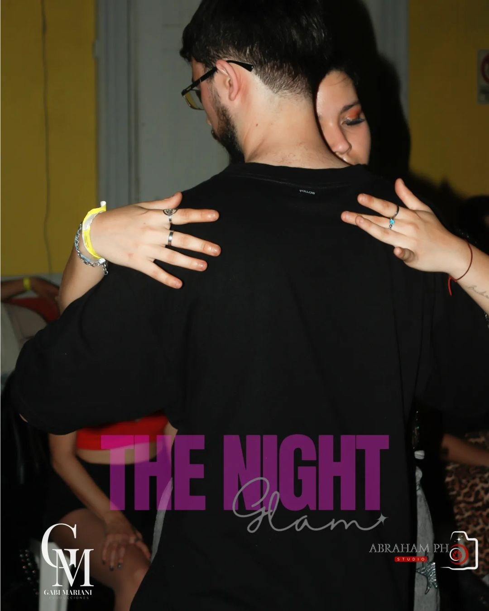

Usa Auriculares para una mejor experiencia.
Reseñas
Fernando Horta
Menu
Santa Milonguita
Una milonga con un ambiente cálido y acogedor, ideal para disfrutar de la danza en buena compañía. Se celebra regularmente en Concordia.
Milonga
Milonga Andariega
Un espacio perfecto para los amantes del tango, con música en vivo y una comunidad entusiasta. Se organiza con frecuencia en Concordia.
Milonga
Milonga Alumni
Un espacio perfecto para los amantes del tango, con música en vivo y una comunidad entusiasta. Se organiza con frecuencia en Concordia.
Milonga
Viejo Porton
Un espacio perfecto para los amantes del tango, con música en vivo y una comunidad entusiasta. Se organiza con frecuencia en Concordia.
Milonga
Milonga Popular
Un espacio perfecto para los amantes del tango, con música en vivo y una comunidad entusiasta. Se organiza con frecuencia en Concordia.
Milonga
Club del Tango
Un espacio perfecto para los amantes del tango, con música en vivo y una comunidad entusiasta. Se organiza con frecuencia en Concordia.
Milonga
Bachasal
Una celebración vibrante de la bachata, con música enérgica y una atmósfera electrizante que invita a todos a bailar.
Bachata Social

The Night Glam
Un evento exclusivo en Concepción del Uruguay, donde la bachata se encuentra con el glamour y la elegancia.
Bachata Social
Apasionados
Un evento popular en Colón, lleno de energía y pasión por la danza, donde todos se sienten como en casa.
Bachata Social
Fernando Horta
Inicio
Acerca
Formación
Música
Blogs
Contacto
GIT
FB
IG